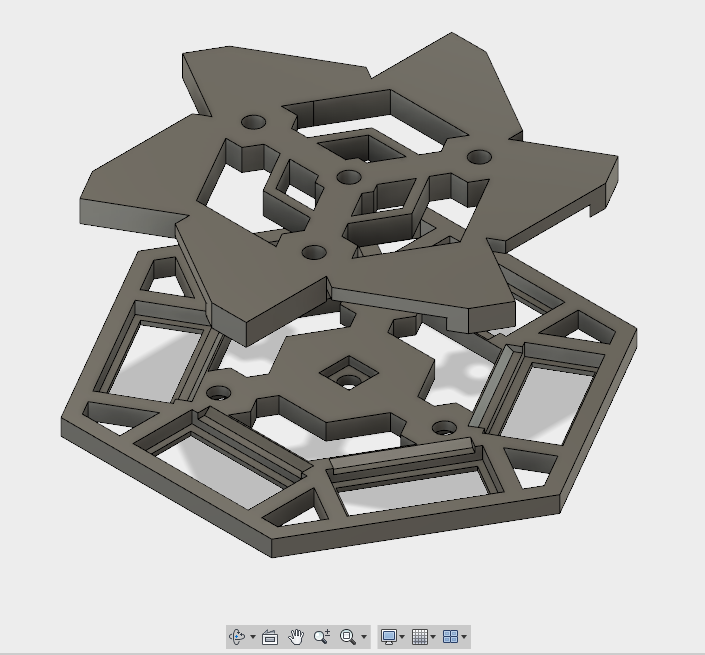
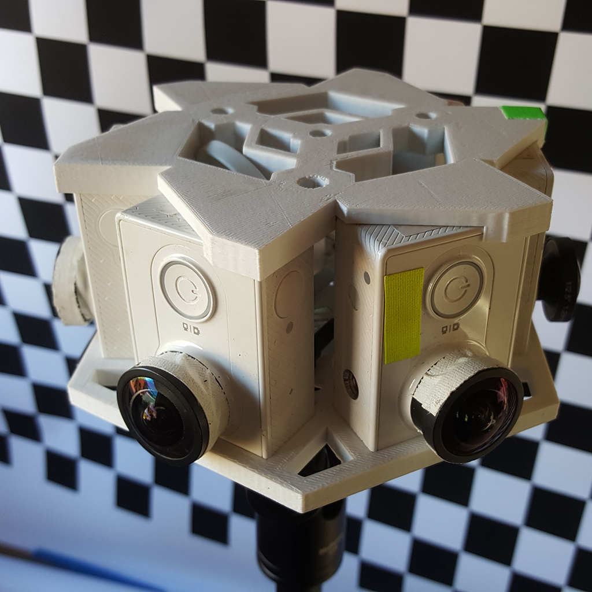
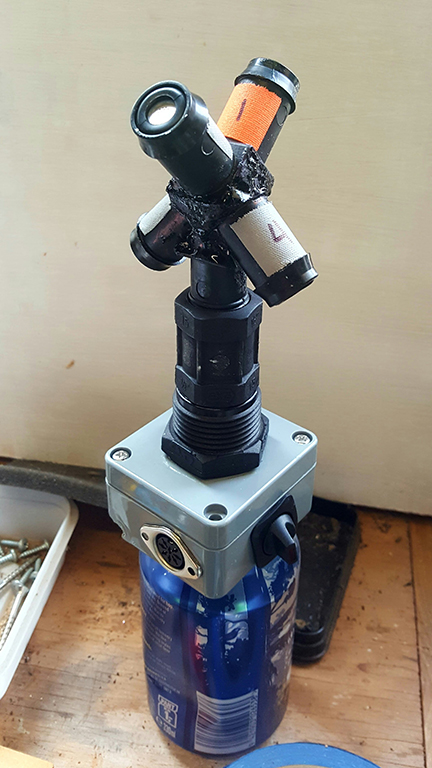
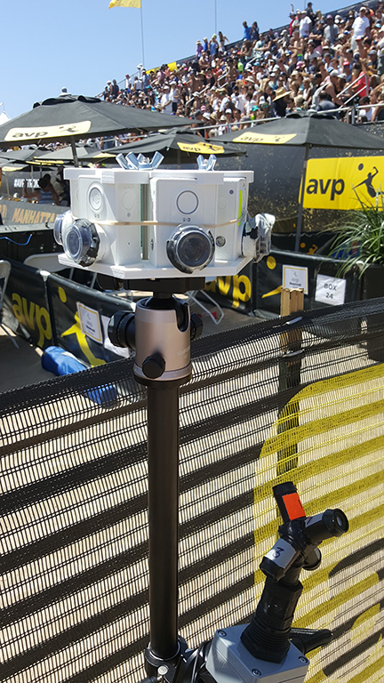

hexcam
The previous post takes this story to mid year 2016. This is around the time I tried to make a nuke script that could take my 2 camera stereo footage and make it nice for YT. I had a nice player for touchdesigner, and I wanted to see if I could do the same in a Nuke script. This is mentioned at the end of this post: Stereo Camera Tests
3d printed rig
With that done, up next was the 6 camera stereo rig idea. For this one I did not make a foamcore mock up. I was pretty confident this would work, so confident I went right to trying to ‘make it nice’ and 3d print the holder. This is not something I had ever done before. In all honesty, I didn’t ever think I had much use for 3d printing. I thought cnc milling this made much more sense to me but when I approached my friend Ronnie for help to mill this, he said why not 3d print it. I said ‘because I don’t know anything about that. You think I should do that?’ he said yes and offered to help. We made a date. Ronnie is expert on many things including this whole area, so I knew to take his advice.
I had a tiny bit of experience with parametric modeling from a while back but was not too good at it. I used fusion360 to smash out some templates for the ‘front stereo’ rig as seen in the last post, and for this I stumbled around quite a bit. Now I wanted to make something a bit more ‘for reals’ and I had a date in a few days with Ronnie where he was going to bring over his delta printer and try out the Vive. I had to make it happen pretty quickly. I watched a few videos and bashed it together and surprised myself.

I was actually pretty amazed that I could make what I wanted in pretty much one evening. I missed some features where I could connect things up and get that parametric modeling advantage, but it at least it was ready when Ronnie arrived. Around this time it’s NZ winter and my shed is cold-as-shit, so the print we made that night warped off of the bed as it cooled too rapidly. It was just one of two pieces, the bottom. It was probably not a terrible thing that it warped because the fit tolerance was too tight. I had guessed at this, having never printed anything before. I made small adjustment to my model and that weekend Ronnie printed it again at his house and it came out great.

shown here before I had the screws to hold it together
Around this time I was also putting together a diy tet mic. Looked like this:

I brought all this stuff with me on a work trip to LA and was fortunate to have one day off where I could shoot some things. I shot a bunch of stuff at a beach volleyball tournament

and a bit at venice beach
as shown here, I was trying this with the gear360 camera on the top. This idea was to get a bit more ‘immediate’ results to find good clips worth stitching. Unfortunately the gear360 camera still requires a process and the tools provided for this are surprisingly shit for what this thing costs.
It was quite a while until I pulled together some time to stitch anything and prove out the six cam stereo idea. Eventually I got this test. If you have a way to view Youtube videos in stereo in an hmd, you will see the full effect. In a browser you see standard mono
With this small test, I was starting to feel like this tangent I’d been on (spherical and stereo spherical video) was struggling to hold my interest. The effort vs reward proposition was not holding up that well. The time it takes in post production to make something good was too large for me working alone.
I learned quite a bit over the year I’d been doing this and was hungry to keep learning at this kind of rate. I was beginning to feel a pull to checkout real-time / game engine type content creation methods. I had a new idea for rapid content creation for HMD using motion capture. I decided with that project, I could use to learn these game engine tools.
So with this one short clip at 60fps and no ambisonic audio, I decided to put my camera array exploration on a shelf for a while and spend the next several months using the bulk of my project time on ‘Trash Praxis’ and use my gear and skills to help a colleague with their VR film making
One take away from my exploration was that the first and simplest rig, 2 gopro’s stock lenses + Nuke script to format to latlong with blurred peripheral (the example mentioned top of this post) was the best effort and payoff. Quality is good, immersion is good, effort to ‘fix’ anything is close to none.